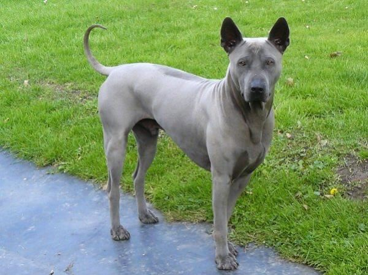
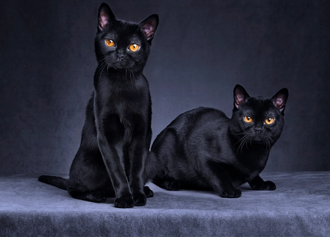
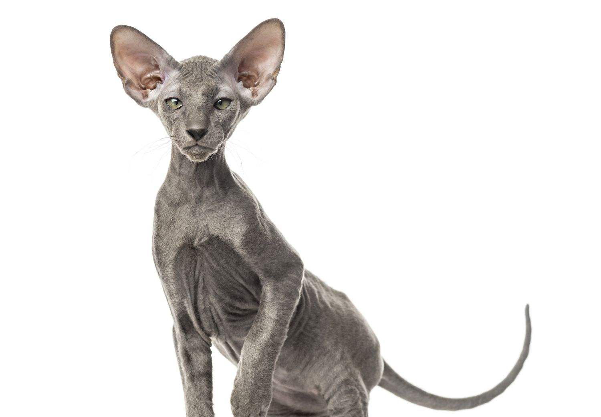
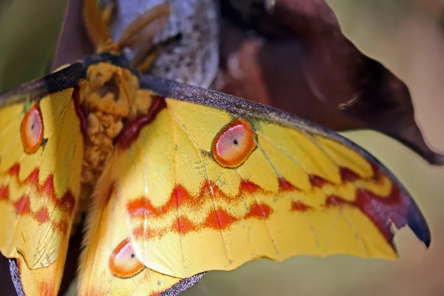
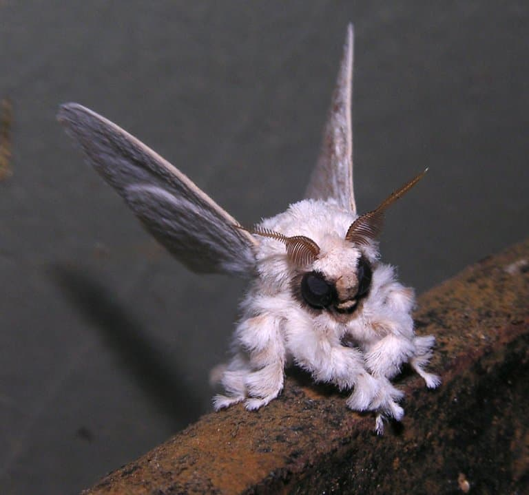

A small collection of rare creatures that I find fascinating.
Dogs
Thai Ridgeback Bred for hunting, guarding and Cobra killing. Highly protective of their families. Aggressive if not properly socialized. They have blue tongues!Catahoula Hound Bred for hunting wild pigs. Can easily climb fences. Not overly friendly, they only bond with 1 or 2 people.
Cats
Bombay They aren't from Bombay! They love to burrow. Bombays are entirely black.Peterbald Are born bald or with fur. They require more food than the average cats. Their fur changes over time, length texture or presence!
Moths
Comet Moth One of the largest moths in the world Native to madagascar but bred in captivity. It has a thick hairy body.Venezuelan Poodle Moth. It's fur is made of soundproofing sugar. It's only been found once. People often mix this moth up with other similar species.